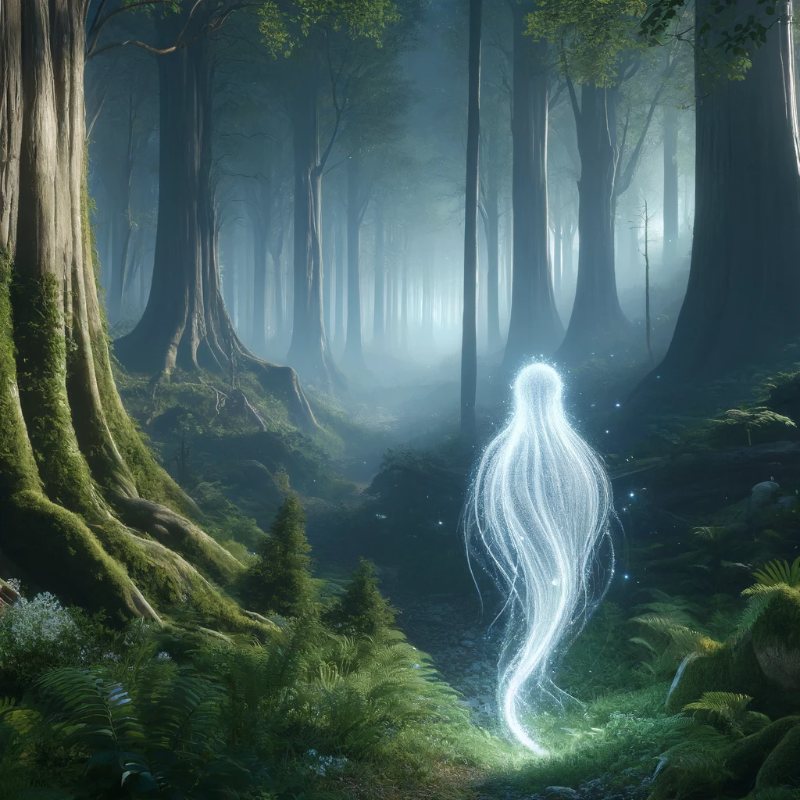

Encounter with spirits (if following the poem)
Answer the spirits' riddles:
With each correct answer, the spirits become friendlier, revealing a hidden grove that shortcuts through to the temple.
Offer a gift from your bag:
Elara offers a small crystal vial of moonwater, rare and precious. Delighted, the spirits bestow upon her a charm made of woven leaves that glows softly, warding off dark energies.
